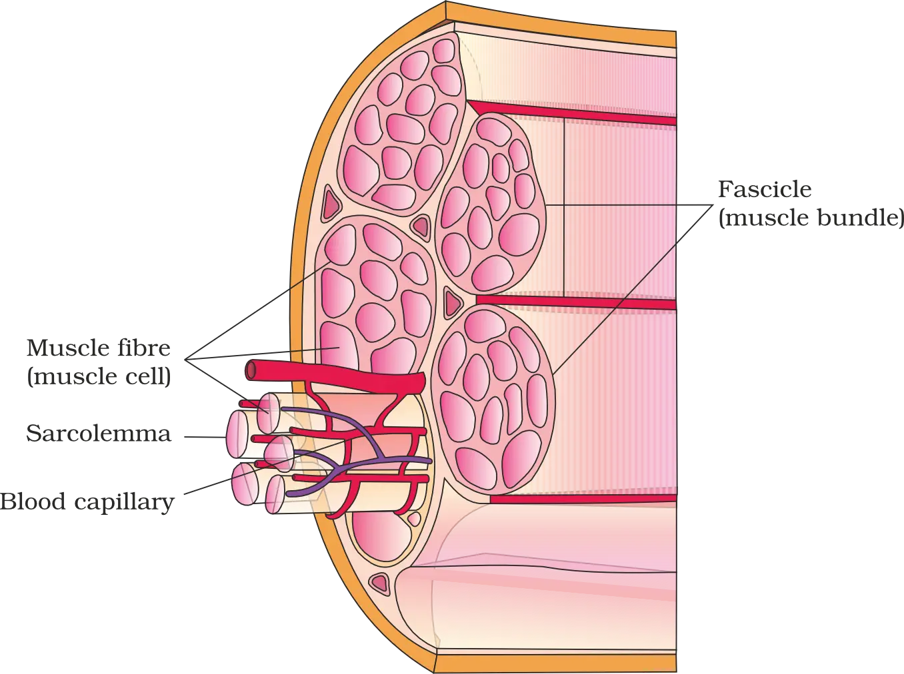
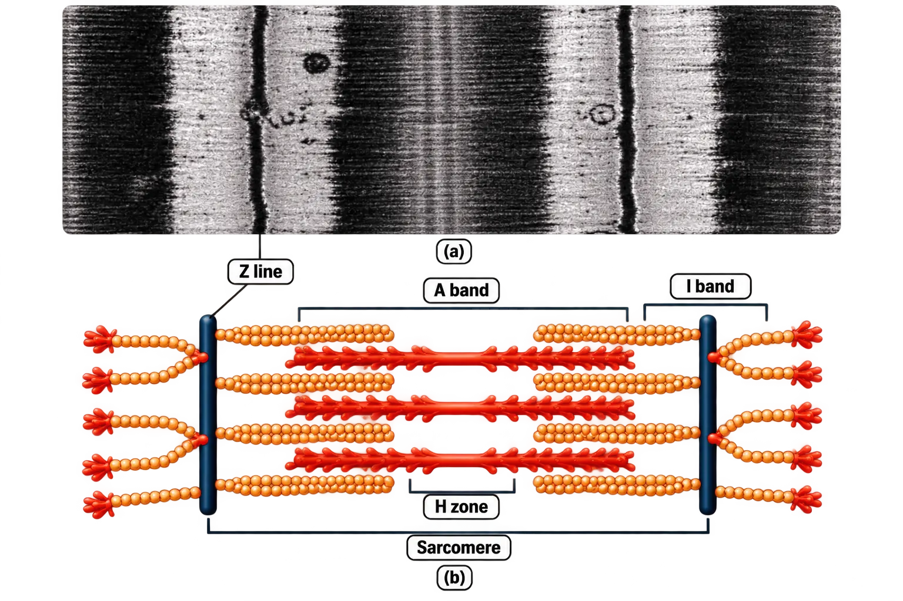
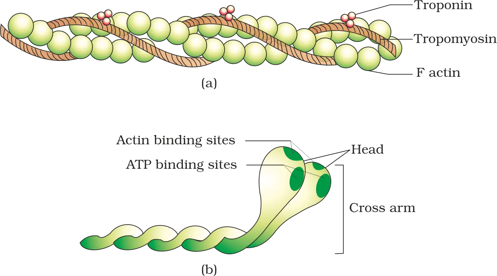
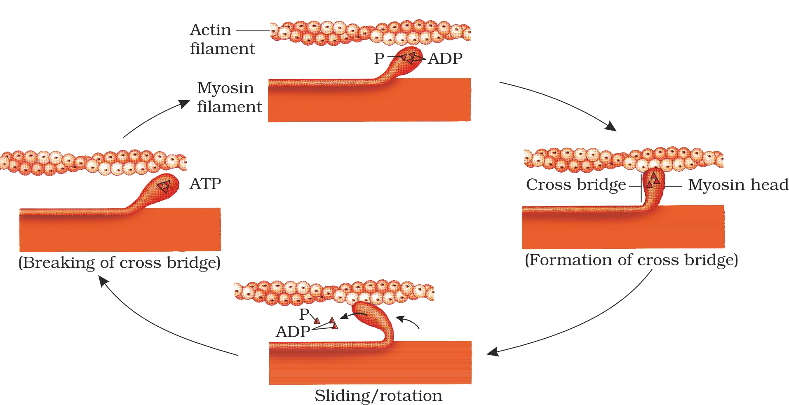
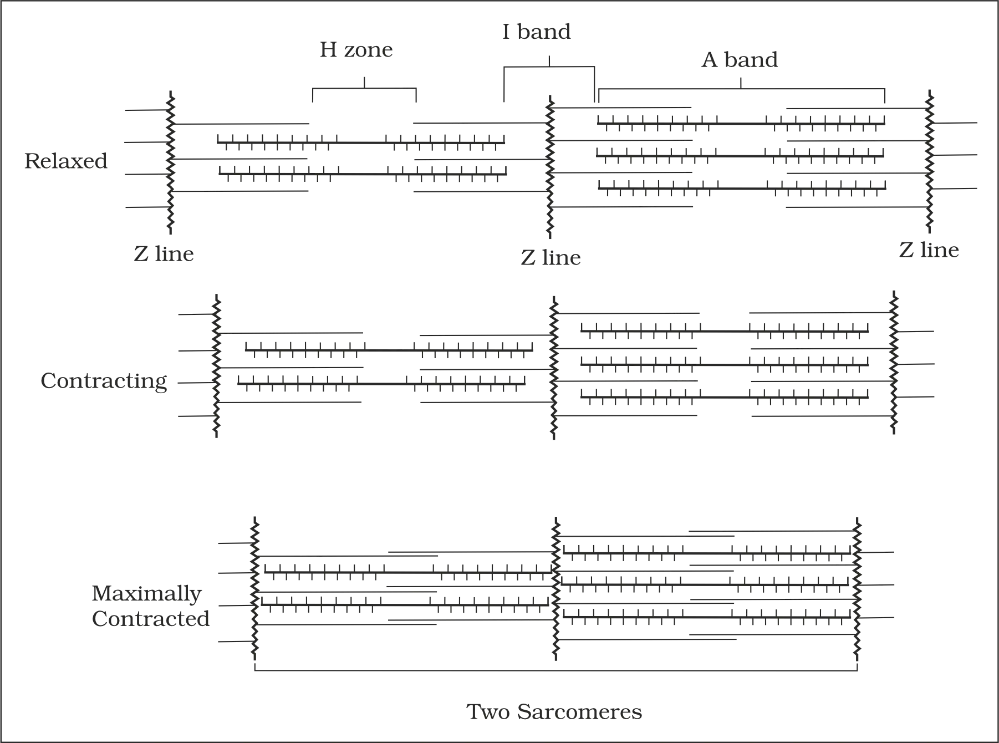
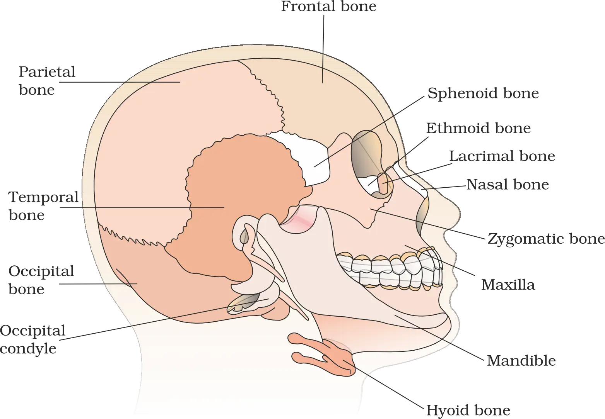
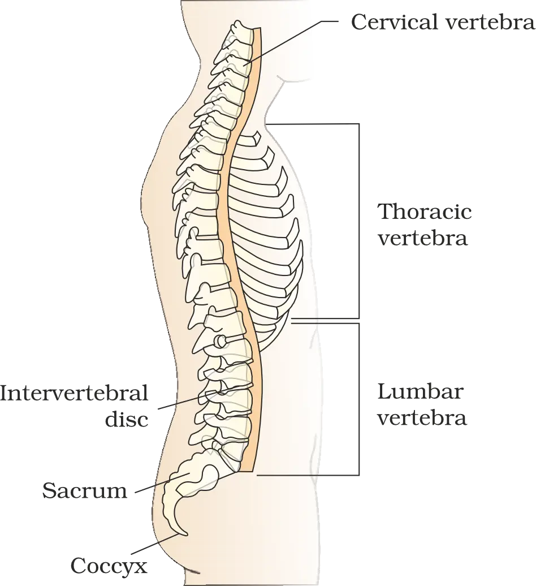
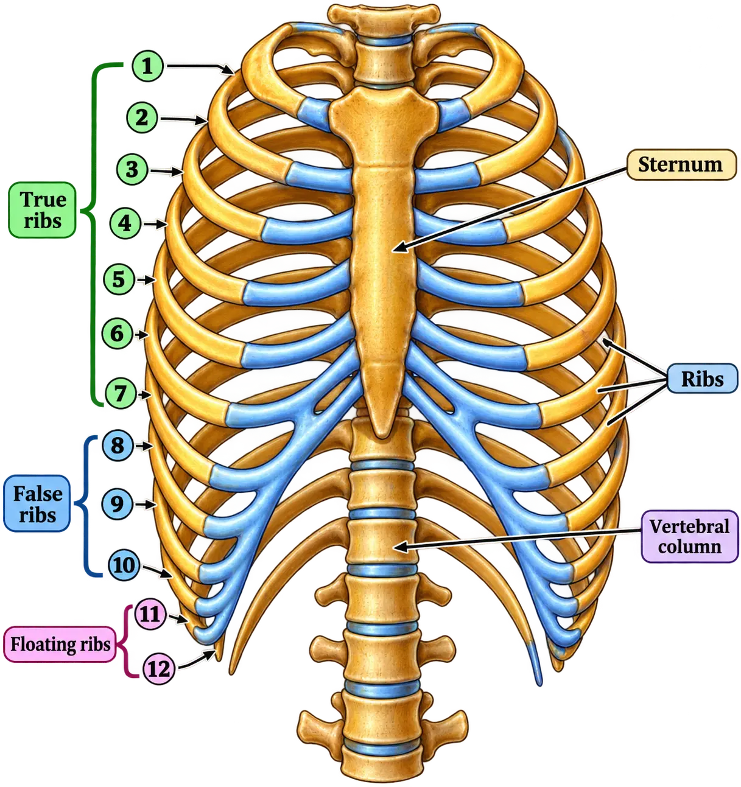
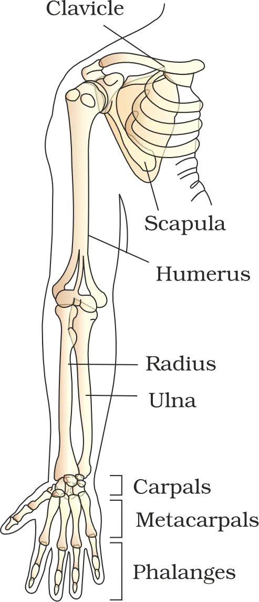
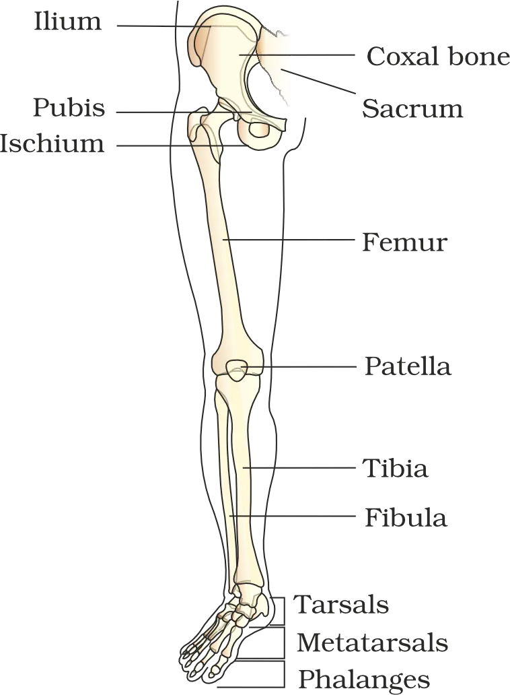

LOCOMOTION AND MOVEMENT
Locomotion and Movement
Movement vs Locomotion
- Simple movement example: Streaming of protoplasm in Amoeba.
- Other movements: Cilia/flagella/tentacles movement; in humans—limbs, jaws, eyelids, tongue, etc.
- Locomotion examples: Walking, running, climbing, flying, swimming.
- Paramoecium: cilia move food through cytopharynx and also help in locomotion.
- Hydra: tentacles capture prey and can help in locomotion.
- Humans: limbs help in posture change and locomotion.
Why animals locomote (general purposes)
Foodsearch & obtain
Sheltersafe living space
Matereproduction
Breeding groundsreach suitable sites
Favourable climatebetter conditions
Escapeavoid predators/enemies
- Search of food
- Search of shelter
- Search of mate
- Reaching suitable breeding grounds
- Seeking favourable climatic conditions
- Escape from enemies/predators
17.1 Types of Movement
Amoeboidpseudopodia + cytoskeleton
Ciliarycoordinated cilia in tubular organs
Muscularcontraction of muscles; basis of limb movement
Amoeboid movement
- Seen in specialised human cells: macrophages and leucocytes (WBCs) in blood.
- Occurs by formation of pseudopodia due to streaming of protoplasm (as in Amoeba).
- Cytoskeletal microfilaments are involved (support and drive the movement).
Streaming of protoplasm
→Pseudopodia form
→Amoeboid movement
Ciliary movement
- Occurs in internal tubular organs lined by ciliated epithelium.
- Trachea: coordinated ciliary beating removes dust particles and foreign substances inhaled with air.
- Female reproductive tract: ciliary movement facilitates passage of ova.
Ciliated epithelium (tubular organs)
→Coordinated cilia beating
→Transport / clearance
Muscular movement
- Required for movement of limbs, jaws, tongue, etc.
- Based on the contractile property of muscles; used for locomotion and many other movements in humans and most multicellular organisms.
Neural system
→Muscles contract
→Skeleton acts as lever
→Locomotion
17.2 Muscle
Background: cilia and flagella as locomotory structures
- Cilia and flagella are outgrowths of the cell membrane (from earlier cell-structure study).
- Flagellar movement helps in:
Spermatozoaswimming
Spongesmaintains water current in canal system
Euglenalocomotion (protists)
- Swimming of spermatozoa
- Maintenance of water current in the canal system of sponges
- Locomotion of protists like Euglena
Muscle tissue: origin, proportion, properties
Excitabilityresponds to stimuli
Contractilityshortens to generate force
Extensibilitycan be stretched
Elasticityreturns to original length
Classification of muscles
Locationwhere found
Appearancestriated vs nonstriated
Regulationvoluntary vs involuntary
Skeletal muscle (striated, voluntary)
- Location: closely associated with skeletal components
- Appearance: striped under microscope → called striated muscle
- Regulation: under voluntary control of nervous system → called voluntary muscle
- Functions: mainly locomotion and changes of body posture
Visceral muscle (smooth/nonstriated, involuntary)
- Location: inner walls of hollow visceral organs (e.g., alimentary canal, reproductive tract)
- Appearance: no striations; smooth → smooth muscle (also called nonstriated)
- Regulation: not under voluntary nervous control → involuntary muscle
- Examples of roles: transportation of food through digestive tract; movement of gametes through genital tract
Cardiac muscle (striated, involuntary)
- Location: heart
- Organisation: many cardiac muscle cells assemble in a branching pattern to form cardiac muscle
- Appearance: striated
- Regulation: involuntary (nervous system does not control activities directly)
Structure of Skeletal Muscle (up to Sarcomere)

Organisation: whole muscle → fascicle → fibre
Organised skeletal muscle
→
Muscle bundles (fascicles)
→
Muscle fibres (muscle cells)
Think “fascia = cling wrap” holding bundles together so the muscle keeps its shape.
Muscle fibre: membranes, cytoplasm, nuclei, calcium store
- Sarcolemma = plasma membrane lining the muscle fibre
- Sarcoplasm = cytoplasm enclosed by sarcolemma
- Muscle fibre is a syncytium because sarcoplasm contains many nuclei
- Sarcoplasmic reticulum (specialised endoplasmic reticulum) = storehouse of Ca2+
SARC
Myofibrils/myofilaments and the basis of striations
ActinThin filaments
MyosinThick filaments
- Actin filaments are thin filaments.
- Myosin filaments are thick filaments.
- Both arranged like rod-like structures, parallel to each other and to the longitudinal axis of myofibrils.
Striations = the “barcode look” from alternating regions of thin vs thick filament distribution.
Bands and lines in a myofibril
I-bandLight; isotropic; contains actin (thin)
A-bandDark; anisotropic; contains myosin (thick)
Z-lineElastic fibre; bisects I-band; thin filaments attach
M-lineMidline of A-band; holds thick filaments together
H-zoneCentral A-band region with only thick filaments (no overlap)
IAZMH
- A and I bands alternate throughout the length of myofibrils.
- Z-line is at the centre of each I-band and anchors thin filaments.
- M-line is at the middle of A-band and stabilises thick filaments.
Sarcomere: functional unit of contraction
Z-line
→
Sarcomere (functional unit)
→
Z-line

17.2.1 Structure of Contractile Proteins

Actin (thin filament): components and regulation
Two F-actinsHelically wound around each other
G-actinsMonomers that polymerise to form each F-actin
TropomyosinTwo filaments run close to F-actins along their length
TroponinComplex protein at regular intervals on tropomyosin
- Two F-actins (filamentous actins) helically wound around each other
- Each F-actin is a polymer of monomeric G-actins (globular actins)
- Tropomyosin: two filaments run close to F-actins along their length
- Troponin: complex protein distributed at regular intervals on tropomyosin
At rest: troponin = “site cover” so myosin can’t grab actin yet.
Myosin (thick filament): meromyosin, HMM/LMM, cross arms, enzyme sites
MeromyosinMonomer unit; many make up one thick filament
HMMHeavy meromyosin = globular head + short arm
LMMLight meromyosin = tail
Cross armProjecting HMM portions from thick filament surface
- Each meromyosin has:
- Globular head + short arm = Heavy Meromyosin (HMM)
- Tail = Light Meromyosin (LMM)
- Cross arm = projecting HMM (head + short arm) portions that extend outward from the thick filament surface at regular distance and angle.
- The globular head:
- acts as an ATPase enzyme
- has ATP-binding sites
- has actin-binding (active) sites
17.2.2 Mechanism of Muscle Contraction (introduction)

Thin (actin)
→
slides over
→
Thick (myosin)
Muscle Contraction (Sliding-Filament Mechanism)
Sequence of Events: From Nerve Signal to Contraction
CNS signal via motor neuron
→
Signal reaches NMJ
→
Acetylcholine released
→
Action potential in sarcolemma
→
Ca++ released into sarcoplasm
- Neurotransmitter at NMJ: Acetylcholine → generates an action potential in the sarcolemma.
- Key trigger for contraction: rise of Ca++ in the sarcoplasm.
Role of Ca++, Troponin and Exposure of Active Sites
Ca++ increases in sarcoplasm
→
Ca++ binds troponin (on actin)
→
Masking of myosin-binding sites removed
→
Myosin can bind actin
Cross-Bridge Cycle and ATP Use
ATP hydrolysis provides energy
→
Myosin head binds exposed actin site
→
Cross-bridge forms
→
Actin pulled toward centre of A band
- Cross-bridge: binding of myosin head to actin at exposed active sites (requires energy from ATP hydrolysis).
- Direction of sliding: actin filaments are pulled towards the centre of the A band.
Myosin releases ADP + Pi
→
Myosin returns to relaxed state
→
New ATP binds myosin
→
Cross-bridge breaks
→
ATP hydrolysed again → cycle repeats
Sarcomere Band Changes During Contraction
- I band reduces
- A band retains its length

Relaxation: How Contraction Stops
Ca++ pumped back to sarcoplasmic cisternae
→
Actin sites get masked again
→
Z lines return to original position
→
Relaxation
Reaction Time and Fatigue
Red Fibres vs White Fibres
Red fibresHigh myoglobin → reddish; many mitochondria; use stored O2 for ATP → “aerobic muscles”
White fibresLow myoglobin → pale/whitish; few mitochondria; high sarcoplasmic reticulum; depend mainly on anaerobic energy
- Red fibres: high myoglobin + many mitochondria → efficient aerobic ATP production.
- White fibres: less myoglobin + fewer mitochondria but more sarcoplasmic reticulum → rely on anaerobic processes.
17.3 Skeletal System
Think of the skeleton like a “support + lever system” — bones are the solid bars, joints are hinges, muscles pull to create movement.
Bone vs Cartilage Matrix
BoneVery hard matrix due to calcium salts
CartilageSlightly pliable matrix due to chondroitin salts
Human skeleton
→Axial
+Appendicular
Axial Skeleton (80 bones): Components
SkullCranial + facial bones; protects brain; supports face
Vertebral columnMain trunk framework; protects spinal cord
SternumFlat bone at ventral midline of thorax
Ribs12 pairs; form rib cage with sternum and thoracic vertebrae
Skull: Cranial Bones, Facial Bones, Hyoid, Ear Ossicles

- Cranial bones: 8 — form cranium, the hard protective covering of the brain.
- Facial bones: 14 — form the front part of the skull.
MIS
Malleus
→Incus
→Stapes
Dicondylic Skull (Occipital Condyles)
⚠ Don’t mix up: “dicondylic” refers to two occipital condyles (skull–vertebral column articulation).
Vertebral Column: Structure, Regions, Functions

Cervical7 vertebrae (almost all mammals incl. humans)
Thoracic12 vertebrae
Lumbar5 vertebrae
Sacral1 (fused)
Coccygeal1 (fused)
- Protects the spinal cord
- Supports the head
- Attachment point for ribs and musculature of the back
Sternum and Ribs

Rib (dorsal)
→Vertebral column
+Rib (ventral)
→Sternum (direct/indirect)
Classification of Ribs
True ribs (1–7)Attach dorsally to thoracic vertebrae; ventrally to sternum via hyaline cartilage
Vertebrochondral / False ribs (8–10)Do not attach directly to sternum; join 7th rib via hyaline cartilage
Floating ribs (11–12)Not connected ventrally
“Cage” idea: ribs curve around to protect heart + lungs, anchored behind (vertebrae) and in front (sternum).
Appendicular Skeleton: Limbs and Girdles
Bones of the Forelimb (Hand/Upper Limb)

- Humerus
- Radius and Ulna
- Carpals (wrist): 8
- Metacarpals (palm): 5
- Phalanges (digits): 14
Bones of the Hind Limb (Leg/Lower Limb)

- Femur: thigh bone; longest bone
- Tibia and Fibula
- Tarsals (ankle): 7
- Metatarsals: 5
- Phalanges (digits): 14
- Patella: cup-shaped; covers knee ventrally (knee cap)
⚠ Watch the wrist/ankle counts: Carpals = 8 (wrist) vs Tarsals = 7 (ankle).
Pectoral Girdle: Bones and Key Features
- Pectoral girdle articulates upper limb
- Pelvic girdle articulates lower limb
Glenoid cavity
→Head of humerus
→Shoulder joint
Pelvic Girdle: Coxal Bone, Acetabulum, Pubic Symphysis
IliumPart of fused coxal bone
IschiumPart of fused coxal bone
PubisPart of fused coxal bone
Ilium + Ischium + Pubis (fusion point)
→Acetabulum
→Femur articulation
17.4 Joints (Introduction)
Joints (Articulations): Role in Locomotion
Muscles generate force
→Movement occurs through joints
→Joint acts as a fulcrum
Structural Classification of Joints
Fibrous jointsImmovable; bones joined by dense fibrous connective tissue
Cartilaginous jointsSlightly movable; bones joined by cartilage
Synovial jointsFreely movable; fluid-filled synovial cavity present
Fibrous Joints
- Example: Flat skull bones fuse end-to-end via dense fibrous connective tissue forming sutures → together form the cranium.
Cartilaginous Joints
- Example: Joint between adjacent vertebrae in vertebral column → permits limited movement.
Synovial Joints
Ball-and-socketHumerus ↔ pectoral girdle
HingeKnee joint
PivotAtlas ↔ axis
GlidingBetween carpals
SaddleCarpal ↔ metacarpal of thumb
Disorders of Muscular and Skeletal System
Myasthenia Gravis
Muscular Dystrophy
Tetany
Arthritis
Osteoporosis
- Decreased bone mass
- Increased chances of fractures
Gout
Chapter Summary (High-Yield Consolidation)
Movement vs Locomotion
Think: Movement can happen without changing location (e.g., internal movements), but locomotion = movement + displacement.
- Examples of movement forms in animals: protoplasmic streaming, ciliary movements, movements of fins, limbs, wings, etc.
Movements Exhibited by Human Body Cells
Amoeboid movementCell movement type seen in human body
Ciliary movementCell movement type seen in human body
Muscular movementMovement produced by muscle activity
Types of Muscles and Core Properties
Skeletal muscleAttached to skeleton; striated; voluntary
Visceral (smooth) muscleIn inner walls of visceral organs; nonstriated; involuntary
Cardiac muscleHeart muscle; striated; branched; involuntary
- Excitability
- Contractility
- Extensibility
- Elasticity
⚠ Don’t mix up: Extensibility = can be stretched; Elasticity = returns to original shape.
Structural and Functional Units: Muscle Fibre → Myofibril → Sarcomere
Muscle fibre
→
Many myofibrils (parallel)
→
Sarcomeres (serial)
Sarcomere Bands and Filaments
- Central A band made of thick myosin filaments.
- Two half I bands (on either side of A band) made of thin actin filaments.
- Z lines mark the boundaries of sarcomere (I bands are marked by Z lines).
Sketch tip in margins: Z | I A I | Z (Z lines at the ends!)
Regulatory Proteins and Myosin Head Features
- ATPase activity
- ATP-binding sites
- Active sites for actin
⚠ Exam trap: masking of actin’s active sites is often stated with the regulatory complex — here remember the line: masked by troponin (resting state).
Sequence of Events in Muscle Contraction (Sliding Filament Mechanism)
Motor neuron signal
→
Action potential in muscle fibre
→
Ca++ release from sarcoplasmic reticulum
Ca++ activates actin
→
Actin binds myosin head (cross-bridge)
→
Cross-bridges pull actin → sliding
→
Contraction
Ca++ returned to sarcoplasmic reticulum
→
Actin inactivated
→
Cross-bridges broken
→
Relaxation
Fatigue and Fibre Types
Skeletal System Divisions and Major Components
Axial skeletonSkull, vertebral column, ribs, sternum
Appendicular skeletonLimb bones and girdles